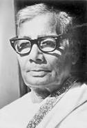

Jasimuddin, was a Bangladeshi poet, prose writer, songwriter and radio personality who is still very much popular in the country. He is best known as Palli Kabi around the country. The poet is highly acclaimed around the Bangladesh for his famous poem ‘Kabar’. Nakshi Kanthar Maath and Sojan Badiyar Ghat are his most notable literary works. His several poems translated into different languages around the world.
He is best known as Palli Kabi around the country. The poet is highly acclaimed around the Bangladesh for his famous poem ‘Kabar’. Nakshi Kanthar Maath and Sojan Badiyar Ghat are his most notable literary works. His several poems translated into different languages around the worldGo back to home